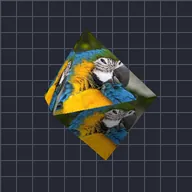

Октаедр

Накладає шар на вісім граней октаедра.
Налаштування
| Налаштування | Тип | Діапазон | Типово |
|---|---|---|---|
| Обертання X | Кут | від -3600° до 3600° | -15° |
| Обертання Y | Кут | від -3600° до 3600° | -35° |
| Обертання Z | Кут | від -3600° до 3600° | 0° |
| Радіус | Число | від 0.02 до 5 | 0.95 |
| Позиція | Точка (X, Y) | від -5000 px до 5000 px | 0 px, 0 px |
| Масштаб | Число | від 0.05 до 10 | 1 |
| Перспектива | Число | від 0 до 1 | 0.5 |
| Затінення | Число | від 0 до 1 | 0.6 |
| Кут світла | Кут | від -3600° до 3600° | 135° |
| Блиск | Число | від 0 до 1 | 0.3 |